* OPPO手机（ColorOS 12）如何设置应用后台运行
1、【锁定后台任务】（防杀）
打开iOA界面后——返回桌面——从屏幕底部上滑从屏幕底部向上滑动（有导航栏的点击多任务按钮）——进入多任务页面 ——点击三个小点——点击锁定——右上角出现锁定标志表示锁定成功。
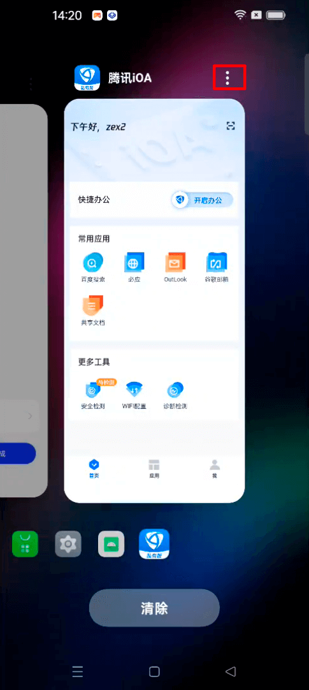
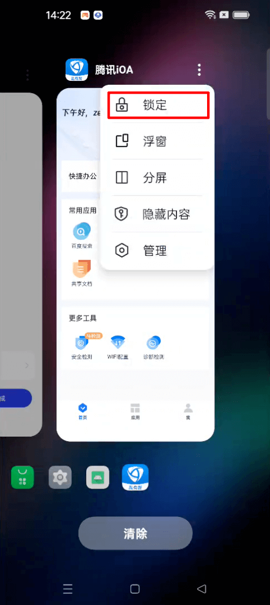
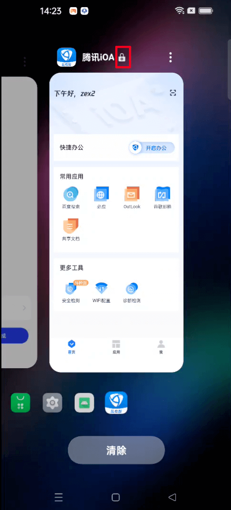
锁定后，可避免点击【清除】时清理iOA。
但需注意的是，如果单独拖动多任务页面中的iOA窗口并上滑，仍会清理掉iOA。
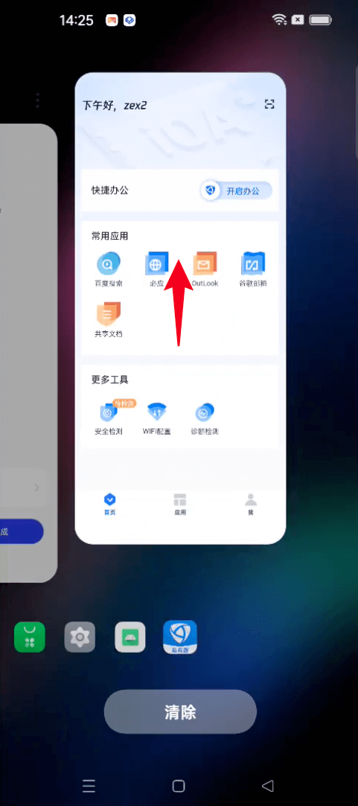
2、关闭【省电模式】
手机状态栏下拉——点击设置图标——电池——关闭【省电模式】 / 关闭【超级省电模式】（如有打开）
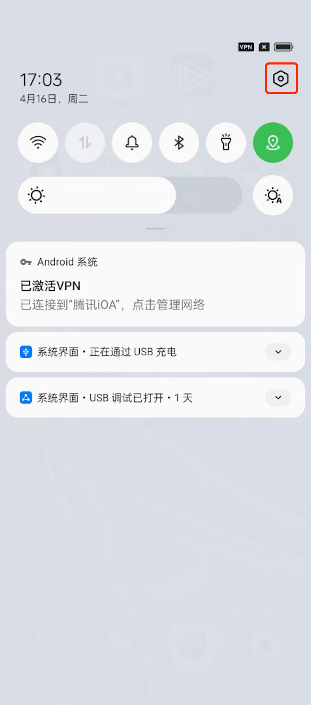

 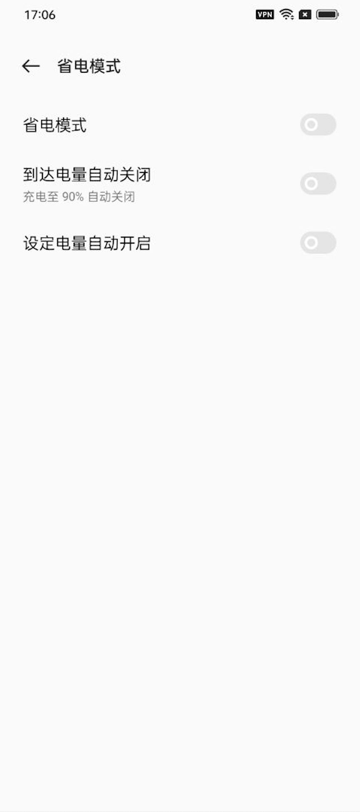
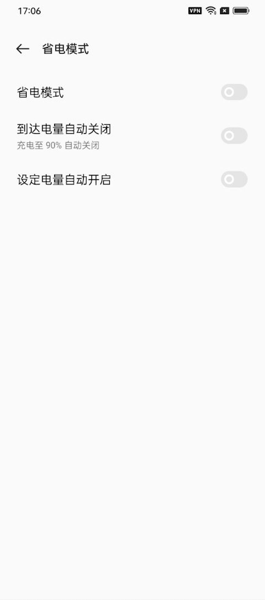
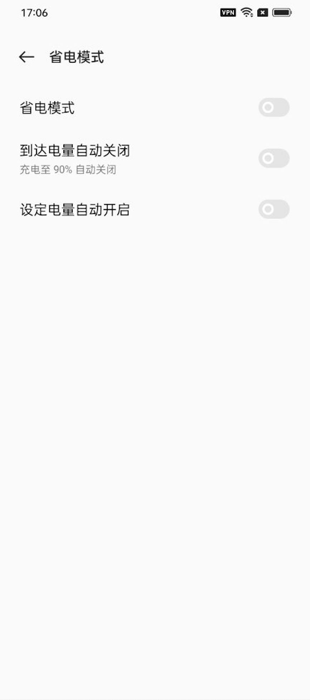
进入电池——高级设置——耗电异常优化——设置iOA不优化
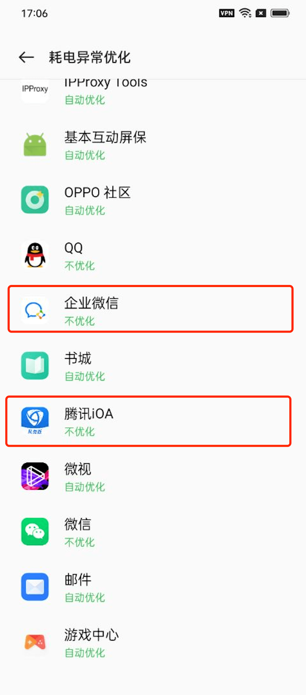
3、【允许后台运行】
设置——应用——应用管理——找到iOA并点击——耗电管理——开启【允许唤醒前台】【允许完全后台行为】【允许应用自启动】【允许应 用关联启动】
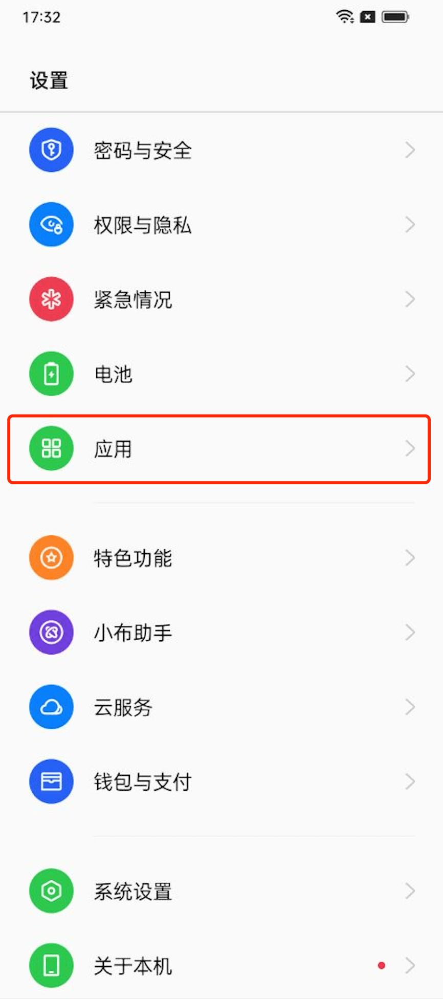
 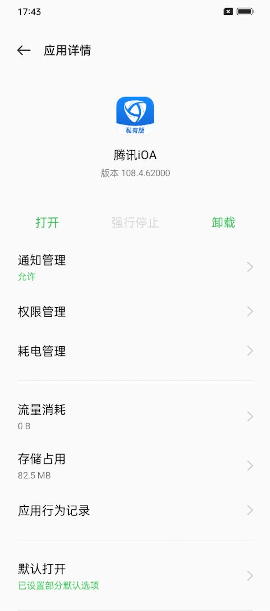
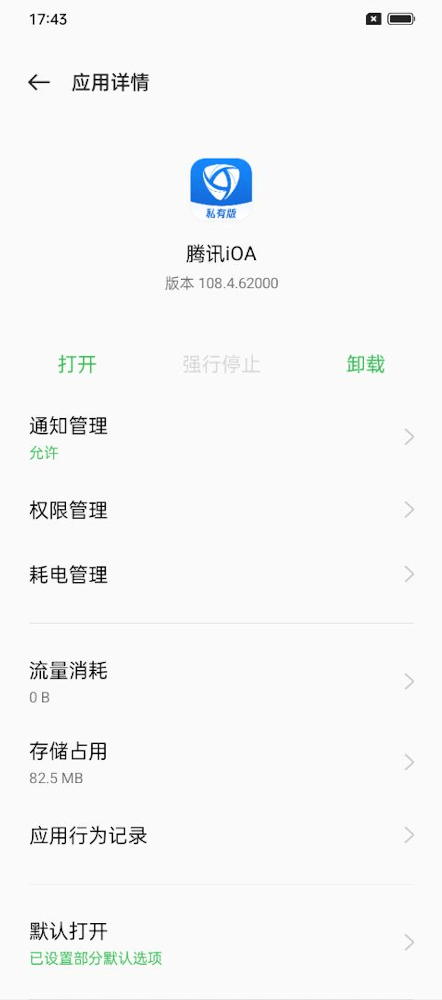

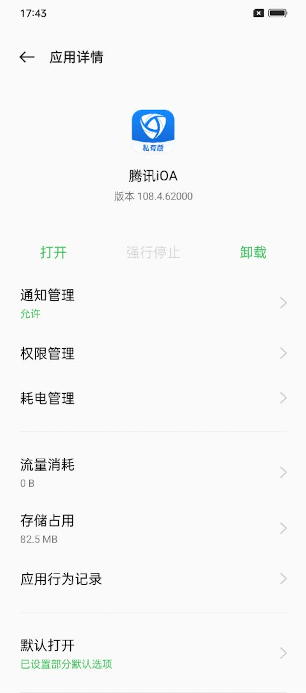